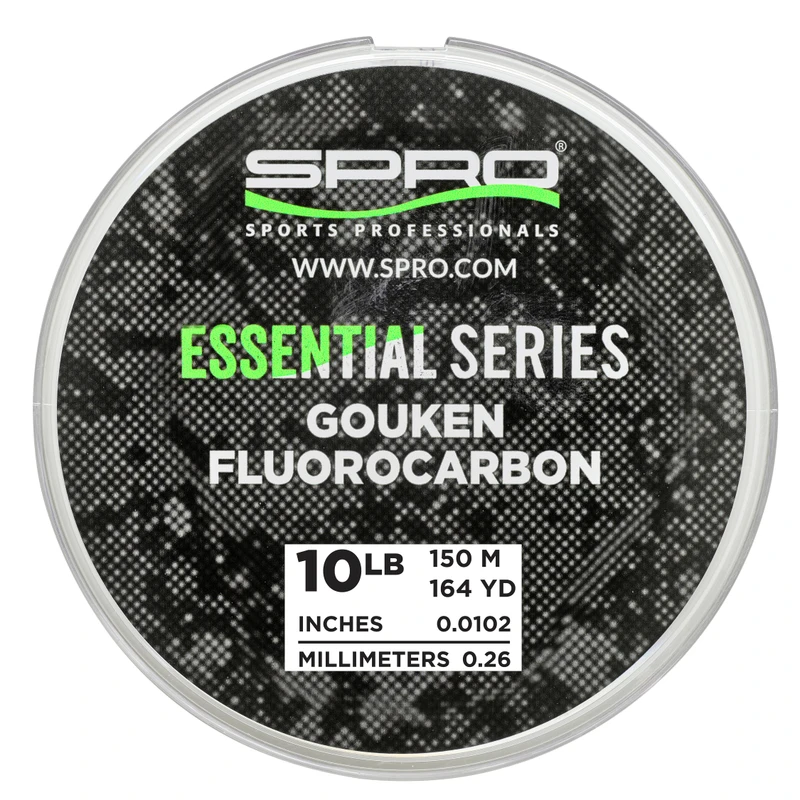

SPRO Gouken FLC
Diameter chart, reel capacity & backing guide

Gouken FLC is SPRO's Essential Series fluorocarbon mainline, positioned for power fishing. Current official variants provide exact diameters and both 150 m and 600 m packages for 6, 8, 10, 12, 14, 16, 20 and 25 lb.
- Construction
- Japanese fluorocarbon mainline in SPRO's Essential Series
- Listed strengths
- 6-25 lb
- Line type
- Fluorocarbon main line
Is Gouken FLC right for your setup?
Gouken is a fluorocarbon main-line option for anglers fishing around cover. Select a manageable diameter for the reel and enough working line to allow retying after the line contacts rough surfaces. Its smaller package holds 150 meters, so compare the available length with your full-spool estimate before choosing a full fill or using backing.
How much Gouken FLC will fit?
Calculated estimates, not measured fills. Stop at the reel manufacturer's fill level even if some line remains.
SPRO Gouken FLC diameter chart
Only the source-reviewed strengths and package combinations listed below are included. Converted measurements are identified in the source notes.
| Strength | Inches | mm | Spools (m / yd) |
|---|---|---|---|
| 0.008071 | 0.205 | 150 m (about 164.041995 yd), 600 m (about 656.167979 yd) | |
| 0.009252 | 0.235 | 150 m (about 164.041995 yd), 600 m (about 656.167979 yd) | |
| 0.010236 | 0.260 | 150 m (about 164.041995 yd), 600 m (about 656.167979 yd) | |
| 0.01122 | 0.285 | 150 m (about 164.041995 yd), 600 m (about 656.167979 yd) | |
| 0.012205 | 0.310 | 150 m (about 164.041995 yd), 600 m (about 656.167979 yd) | |
| 0.012992 | 0.330 | 150 m (about 164.041995 yd), 600 m (about 656.167979 yd) | |
| 0.014567 | 0.370 | 150 m (about 164.041995 yd), 600 m (about 656.167979 yd) | |
| 0.015945 | 0.405 | 150 m (about 164.041995 yd), 600 m (about 656.167979 yd) |
Choosing your Gouken FLC strength
The web variants extend below the older description's 10 lb starting point: 6 and 8 lb are explicitly listed at 0.205 and 0.235 mm. They are verified product additions, not guessed extrapolations.
The 10-16 lb rows progress through 0.260, 0.285, 0.310 and 0.330 mm. The exact metric value is used to convert the capacity input to inches.
The 25 lb variant is listed at 0.405 mm. Do not substitute another brand's 25 lb fluorocarbon diameter or the 0.435 mm value used by some Yo-Zuri mainlines.
Specification-based guidance, not a ReelCalc hands-on performance test. Capacity results are estimates, not measured fills.
Want a guided recommendation?
Continue in the Setup WizardSame pound test, different diameters
At your selected strength
Loading diameter comparisons...
What changes with another line?
Nearby diameters in the line database
| Line | Strength | Inches | Difference |
|---|---|---|---|
| Loading line database... | |||
Backing, working line & leaders
Preserve the meter label
The verified retail sizes are 150 m and 600 m. Yard equivalents are calculation conversions; they are not separate U.S. yard-labeled SKUs.
Select enough working fluorocarbon
When using backing, reserve sufficient Gouken for casts, runs and reties. A full fluorocarbon fill avoids the join but may require more than one small package.
Check thicker-line handling
A 20 or 25 lb fluorocarbon may fit a small spool by volume without being a comfortable casting choice. Rod and reel suitability come before the capacity estimate.
How Much Fits on These Reels?
Estimated full-spool capacity for the Gouken FLC strength selected above, with no backing. These are calculated examples, not physical tests or recommendations for every pairing.
Loading capacity estimates...
Gouken FLC questions, answered
Why are 6, 8 and 25 lb included when the description lists fewer sizes?
The current official variant titles explicitly specify those strengths, their diameters and their 150 m/600 m packages. The older description is narrower than the current selection.
Are 150 m and 150 yd interchangeable?
No. A 150 m spool converts to about 164.04 yards. The metric source label is preserved.
Is Gouken the same as Rai-Jin?
No. Both are SPRO fluorocarbon products, but they have separate product identities and source evidence. Similar diameter rows do not prove identical formulations.
How much Gouken FLC will fit my reel?
Use the exact strength and the reel's published capacity. Pound test is not a fixed diameter, so equal-strength products can produce different fill estimates.
Is one 150 m package enough?
Only when it covers the planned working length and an appropriate reserve. Backing can fill unused volume, but cannot supply more working line for long casts, deep drops or fish runs.
Specifications & sources
Official sources retrieved September 13, 2026. Millimeter diameters are published; inches are converted by dividing by 25.4. Current variant titles explicitly bind pound test, mm diameter and meter length. Description/catalog omit new 6, 8 and 25 lb options that current variants verify. Inch diameters and yard lengths are conversions. Package options are not a stock or price guarantee.
Calculations use the catalog's listed inch diameters. Published inch and millimeter values may differ slightly because of rounding.
- Official SPRO specification source Exact numeric rows, package identity and model positioning.